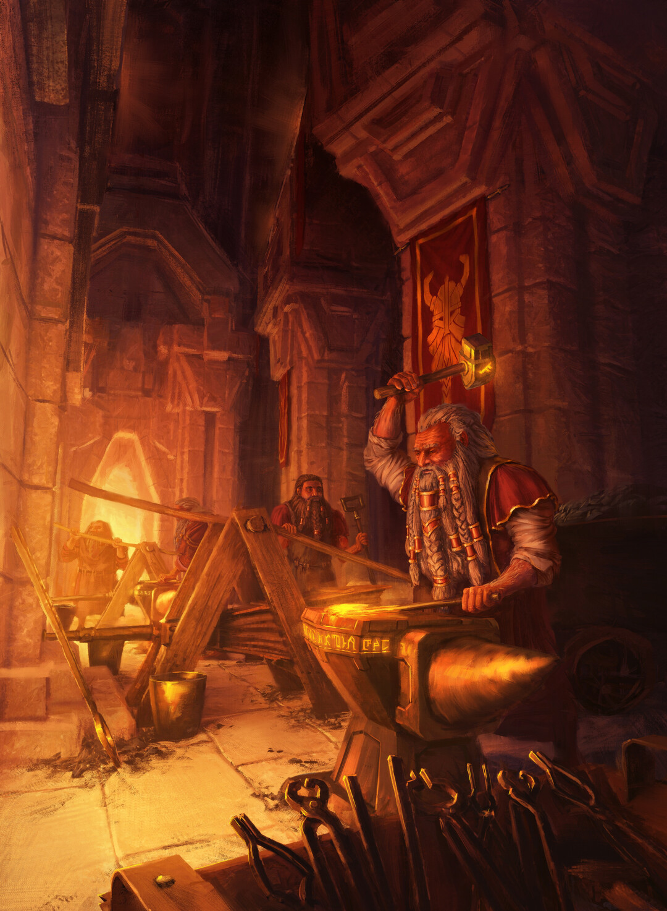
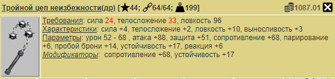
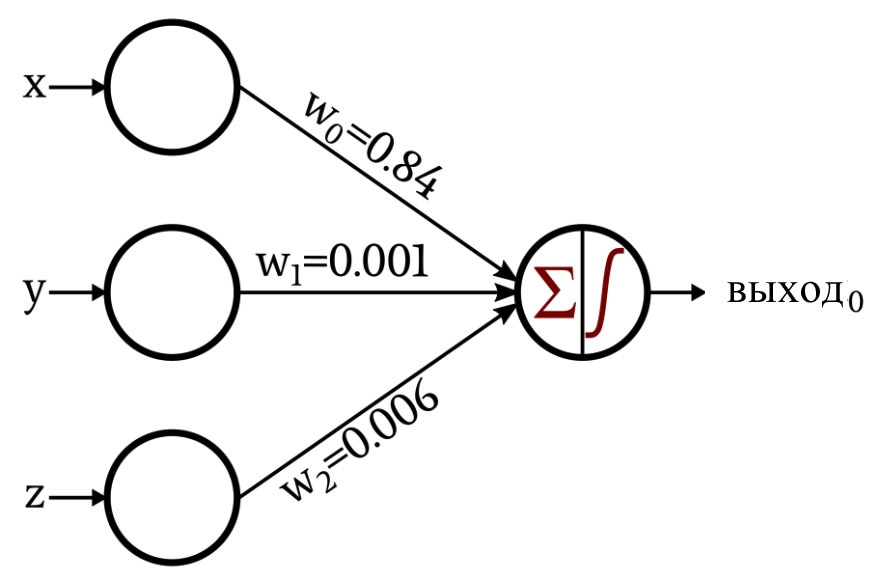

Введенная в игру Кузница древнего пламени (30.05.2014) наделала много шума на игровом форуме в момент выхода. Одни игроки сомневались в целесообразности её использования, другие негодовали от того, что в кузнице не предусмотрено извлечение установленных рун в вещи, часть же игроков наконец-то нашла место сбыта своих древних вещей. Так или иначе, появление в игре Кузницы значительно расширило применимость древних вещей – вещи с загубленными замодами перестали быть аутсайдерами в “межаватарском” обороте, и из древних вещей стало возможным собрать сет, превосходящий комплектные сеты по наборам параметров и характеристик.
Правда мало кто из активных игроков может описать принцип работы Кузницы – нет четкого понимания того, сколько плавить вещей, где брать уголь для плавки большего количества вещей, какие вещи загружать в кузню – магические или воинские и т.д. Данная статья должна дать ответ на эти и другие вопросы.
Как работает и для чего нужна Кузница
Перечислим основные актуальные характеристики Кузни:
- Находится на координатах 71, 21 – это локация с пепельными горами, где встречаются пепельные волки, горные грифоны и черные медведи. Ранее кузня была расположена в Подземелье гномов.
- Основной функционал – переплавка нескольких (1-6 шт.) древних вещей в одну более мощную вещь. При неправильном использовании можно выплавить вещь хуже тех, что были загружены, об этом ниже в формулах.
- Дополнительный функционал:
- Переплавка Остывшего вулканита в Пылающий вулканит (50 шт. -> 1 шт.). Остывший и пылающий вулканит позволяют чинить вещи игрока в походе бесплатно с потерей 1 и 0 (нуль) макс. прочности соответственно.
- Восстановление прочности вещей из комплектов Воина Крови и Магистра. Для восстановления прочности нужна сама вещь и 1 шт. Остывшего вулканита, при этом важно учесть то, что восстановление прочности вещи уничтожает все модификации и руны с рунными словами. Ранее восстановление прочности комплектных вещей в кузне не требовало Остывшего вулканита.
- Квестовая локация (квест “Между молотом и наковальней“).
- Стоимость каждой операции с Кузницей – 5 бревен, 3 обсидиана, 5 железа, 7 меди и 30 кварца. Информацию о стоимости данного набора ресурсов (в том числе в динамике) можно найти здесь в разделе “Обычные предметы”.
Если дополнительный функционал кузни практически не вызывает вопросов у игроков (кроме негодования по поводу уничтожения рун и модов с комплектной вещи), то сам процесс плавки одних древних вещей в другие не столь прозрачен. Далее ответим на главные вопросы игроков в этой части.
Как плавить Древние вещи – FAQ
Для увеличения вместимости кузни используется Янтарный уголь, который можно найти в Подземелье гномов и Забытой долине. Всего угольков 2 штуки, после использовании в кузне одного угля вместимость навсегда повышается до 5, после второго до 6, то есть получаем 3 возможных варианта макс. вместимости 3-5-6. Порядок использования угля роли не играет – можно сначала принести в кузню уголь из Долины, а затем донести уголь из Подземелья гномов (или все сразу).
Практически во всех случаях лучше всего плавить 6 вещей – эффективность плавки в данном случае максимальная. Подробнее ниже в формулах.
Ориентацию вещи (магическая или воинская) и её тип (доспехи, шлем и т.д.) выбирает игрок вручную перед плавкой вещи.
Да, ориентация (маг/воин) вещи ДО плавки не влияет на итоговые замоды выплавляемой вещи.
Среднее арифметическое уровней “загруженных” вещей ±4.
Переплавить не получится, вещи из кузни не пропадут.
Список модификаторов, которые могут выпасть на магических и воинских вещах можно найти ниже в данной статье. Воинские модификаторы вроде Силы не выпадают в модификаторах, если выбрана магическая вещь.
Можно плавить древние (в том числе из СШ), модифицированные, рунированные (и РС) вещи. Артефакты плавить нельзя.
Да, поломанные древние вещи можно переплавлять, однако поломка снизит качество выплавляемой вещи (вплоть до половинного снижения качества замодов при нулевой прочности вещей).
Можно. Гипотетически, плавка данных вещей дополнительно увеличивает силу получаемой вещи, но эта информация требует подтверждения свыше.
Да, в этом основная “фишка” Кузни. Можно взять, например, 36 древних вещей, сплавить из них 6 усиленных версий и затем объединить полученные вещи в одну еще более сильную вещь. Ограничения по количеству плавок нет.
Рамка у древней вещи является внешним маркером силы данной вещи – подобную рамку получают вещи, которые выпадают при победе над Древним Императором, и вещи с сильными модификациями после плавки в кузне. Подробнее про силу модификаций ниже в формулах.
Да, из кузни можно спокойно идти по своим делам, вещи не пропадут. Однако помещенные в плавку вещи не подлежат восстановлению, забрать их из кузни уже не получится.
В кузне нельзя получить комплектные вещи, артефакты и Кольцо последней крови.
На итоговую силу вещи (далее mfp) влияет количество вещей на плавку (3-6 шт.), текущая максимальная прочность, уровень и модификаторы (в том числе от рун и РС) вещи.
В целом, данный список FAQ покрывает наиболее распространенные вопросы игроков в процессе использования кузни. Можно смело запасаться кучей свободного времени и отправиться на фарм древних вещей в отведенных для этого заведениях.
Но если читатель любит разные формулы и хочет плавить вещи как pro MLG, то следующий раздел для вас.
Формулы расчета итоговой силы вещи
Отдельная благодарность создателю игры – Rewad‘у – за предоставленные формулы.
Прежде чем погружаться в мир формул, конкретизируем одну из используемых в расчетах переменных. Итоговая сила вещи после переплавки (mfp – Modification points) является агрегированным показателем силы вещи, вычисляемый на основе её модификаторов согласно внутриигровым формулам. Узнать mfp вещи можно с помощью одноименной команды чат-бота. При значении mfp > 100 древняя вещь получает золотую или синюю рамку, но с некоторыми ограничениями (об этом в пункте 4 ниже). Однако данное значение силы вещи не определяет её качество – оно лишь показывает то, какой у данной вещи был потенциал ПЕРЕД распределением модификаторов – то есть 2 вещи, первая с 60 силы, а вторая с 1050 регенерации здоровья, могут иметь одинаковый mfp, но, очевидно, разную полезность.
Итак, расчет итоговой силы выплавляемой вещи происходит в несколько этапов.
Разберем на конкретном примере – всеми любимом Тройном цепе неизбежности. Смоделируем ситуацию, когда мы плавим 2 штуки такого чудесного оружия, но один из цепов сломан до макс. прочности 32.

- Определение списка модификаций каждой из загруженных в кузню вещей. Модификации отображаются в графе “Модификаторы” в описании древней вещи – сопротивление 68, устойчивость 17

- Для каждого из модификаторов данной вещи применяется преобразование – деление на некий коэффициент, определенный для каждого модификатора – “вес” модификатора. Полученные значения складываются между собой. Значение коэффициентов можно найти ниже в таблице.
Процесс плавки вещей напоминает перцептрон.
Для нашего примера получим следующее:
- Сопротивление 68 = 68/6 = 11.33
- Устойчивость 17 = 17/3 = 5.66
- Суммируем полученные коэффициенты. Получаем Mfp = 11.33+5.66=17 mfp.
- В нашем примере 2 вещи (2 одинаковых цепа неизбежности), складываем их mfp. Mfp = 17+17 = 34.
| Модификатор | Коэффициент |
|---|---|
| Сила, Ловкость, Телосложение, Интеллект | 1 |
| Выносливость | 1.4 |
| Воля | 1.3 |
| ОД на действие | -0.1 |
| Здоровье и Мана | 18 |
| Всего ОД | 10 |
| Мин. и макс. урон | 7 |
| Атака и защита | 9 |
| Броня | 5 |
| Крит. шанс | 3 |
| Сопротивление | 6 |
| Парирование | 1.5 |
| Пробой брони | 5 |
| Устойчивость | 3 |
| Реакция | 2 |
| Реген. маны | 4 |
| Реген. здоровья | 5 |
| Заклинатель, призыватель, разрушитель, осквернитель | 0.012 |
- Учитываем прочность вещей. Чем сильнее сломаны вещи, тем меньше mfp учитывается в дальнейших расчетах.
Расчет штрафа за прочность происходит следующим образом:
- макс_прочность = 20*количество_вещей_в_плавке + сумма_уровней_вещей
- В примере макс_прочность = 20*2 + 44 + 44 = 128
- текущая_прочность = сумма_макс_прочности_вещей
- В примере текущая_прочность = 64 (фулл прочка) + 32 (второй цеп поломан вполовину) = 96
- Штраф = 1 – (1 – (текущая_прочность/макс_прочность))/2
- В примере штраф = 1 – (1 – 96/128)/2 = 1 – 0.25/2 = 0.875
- Применяем штраф к полученным ранее mfp.
- В примере mfp = mfp * штраф = 34 * 0.875 = 29.75
Важно
Заметим, что согласно формуле, максимальный штраф за прочность не может превысить значение в 0.5 единиц, так как отношение текущей прочности к максимальной делится в формуле на 2.
Например, у нас 6 вещей 60 уровня с макс прочность 1, получим штраф при переплавке 1 – (1 – 6/480)/2 = 1 – (1 – 0.0125)/2 = 0,50625
- Прогоняем полученное значение mfp через функцию, которая замедлит сильный рост значений. Именно на данном этапе происходит ощутимое нелинейное снижение mfp итоговой вещи.
Формула преобразования следующая: mfp = mfp0.86
Для нашего примера получим: mfp = 29.750.86 = 18.5
Важно
Если значение mfp вещи на данном этапе превышает 100, вещь получит золотую или синюю рамку.
- Определяем дискретность для выходных модификаторов вещи. В данном случае, дискретность влияет на то, какими по величине “мазками” будут собираться модификаторы будущей вещи. Конкретизируем это туманное описание на примере ниже.
Дискретность считается по следующей формуле: округление_вверх(mfp / случайное_число_между(3, 20)). Примечание – значения 3 и 20 также включены в распределение рандома.
Допустим нам выпало число 7 в рандоме, итого получим дискретность = 18.5/7 = 3.
- Считаем итоговые модификаторы вещи на основе полученных mfp и дискретности.
Теперь самое интересное. У нас есть дискретность и mfp загруженных в кузню вещей – первое определит список модификаторов на новой вещи, второе окажет влияние на силу данных модификаторов.
Для начала посмотрим список модификаторов, из которых будет собираться итоговая вещь – эти списки различны для воинских и магических вещей на выходе.
| Воинские мф | Коэффициент | Магические мф | Коэффициент |
|---|---|---|---|
| Сила | 1 | Интеллект | 1 |
| Телосложение | 1 | Воля | 1.5 |
| Ловкость | 1 | Броня | 5 |
| Выносливость | 1.5 | Сопротивление | 6 |
| Атака | 9 | Реген. маны | 5 |
| Защита | 9 | Устойчивость | 3 |
| Броня | 5 | ОД на действие | -0.08 |
| Крит. шанс | 3 | Здоровье | 17 |
| Сопротивление | 6 | Мана | 17 |
| Парирование | 1.5 | ||
| Реакция | 2 | ||
| Устойчивость | 3 | ||
| Пробой брони | 5 | ||
| Реген. здоровья | 8 | ||
| ОД на действие | -0.08 | ||
| Здоровье | 17 | ||
В нашем примере мы получили дискретность равную 3. Это означает, что мы должны случайно выбрать из списка 3 модификатора, при этом модификаторы могут повторяться, то есть можно выбрать 3 раза Силу (и тогда все mfp пойдут в Силу и вещь на выходе будет только с модификатором Силы), или 3 разных модификатора (тогда mfp поровну разделится между ними), или еще как угодно в любой случайной комбинации.
Если бы дискретность была равна единице, то была бы выбрана 1 случайная модификация и все mfp отправились бы в неё. Если бы у нас в загрузке было 300 mfp при случайном числе 4 (из предыдущего пункта, где рандом от 3 до 20 включительно), то дискретность составила бы 75 единиц и из списка было бы выбрано 75 случайных модификаторов.
Важно
Не трудно заметить, что чем выше дискретность, тем выше шанс получить вещь со множеством модификаторов, что не всегда полезно – у игроков ценятся древние вещи с неполоманными замодами. Однако теоретически возможно, что рандом сжалится над игроком и отправит все 75 бросков в гипотетическую силу, что даст древнюю вещь с 250+ силы.
Шанс такого исхода при дискретности 75 составляет 4.9*10-91. Если игрок будет плавить в секунду 1 миллиард вещей, то для получения такой вещи уйдет больше лет, чем секунд существует вселенная (очень сильно больше).
В качестве примера выберем Магическую вещь, Сапоги. Кидаем кубик рандома 3 раза и нам выпадает Интеллект, Интеллект, Устойчивость.
Остался последний шаг – посчитать значение модификаторов. Подсчет силы итогового модификатора выполняется по формуле:
Сила_модификатора = mfp/дискретность * коэффициент_модификатора * случайное_число_между(80,100)/100, где коэффициент_модификатора – значение коэффициента из таблице выше для магических и воинских модификаций. На данном этапе происходит дополнительная потеря mfp от рандом – вплоть до потери 20% силы отдельных модификаторов.
Посчитаем эти значения для нашего примера:
- Интеллект: 18.5/3 * 1 * 0.87 (случ. число) = 5.93
- Интеллект: 18.5/3 * 1 * 0.81 (случ. число) = 5.53
- Складываем одинаковые моды: 5.93 + 5.53 = 11.46 = 11
- Устойчивость: 18.5/3 * 3 * 0.96 (случ. число) = 19.66 = 20
В итоге получим магически сапоги 40-48 уровня с модификаторами 11 Интеллекта и 20 Устойчивости. Mfp данной вещи равно 11+20/3=18, при этом в плавку ушли 2 вещи с 17 mfp каждая. Итоговый прирост силы вещи незначителен, что связано с тем, что мы нагрузили кузню только на 2 вещи, поэтому предпочтительно загружать в кузню 5-6 вещей одновременно.
На этом расчеты подходят к концу – вещь выдается счастливому обладателю и тот идет хвастаться в чат игры или выкладывает вещь на продажу в магазин.
Парочка советов
- Чем больше вещей в плавке – тем меньше потеря mfp в итоговой вещи и выше эффективность преобразования. Старайтесь плавить 5+ вещей за 1 плавку.
- Не смешивайте вещи со слабыми замодами с вещами с мощными замодами – если вы загрузите 1 вещь с 300 mfp и 5 вещей с 17 mfp, то на выходе получится что-то несуразное с примерно 180-200 mfp, то есть вы потеряете треть от силы вещи. Лучше плавить вещи с плюс минус одинаковыми mfp (или посчитать допустимый диапазон mfp).
- Используя формулы выше, можно рассчитать необходимый набор вещей на плавку, с помощью которого можно восстановить прочность сильной древней вещи. Важно помнить то, что вещь получится, несомненно, другая по модификаторам, но её mfp сохранится. Одновременно с этим можно поднять исходный уровень вещи, что также усилит итоговый предмет. Для примера – если у вас есть сломанная в ноль вещь с 300 mfp, то для её починки понадобится 5 вещей с mfp 120+. После переплавки получится новая вещь с mfp около 300. Также этот метод подходит для рерола (перераспределение) модификаторов вещи без потери её мощности.
- В магазине аватариума можно посмотреть mfp выставленных игроками вещей на продажу.
- В игре присутствуют уж очень невкусные руны (с реакцией, регенерацией здоровья и т.д.) – если они вам не нужны и их никто не покупает, то можно вставить данные руны в вещи перед переплавкой, что повысит mfp итоговой вещи.
- В кузнице можно выплавить квестовое древнее кольцо (квест “Исполнитель желаний”).
- На Аватариуме можно посчитать все метрики из статьи в полуавтоматическом режиме.
Благодарю за внимание.